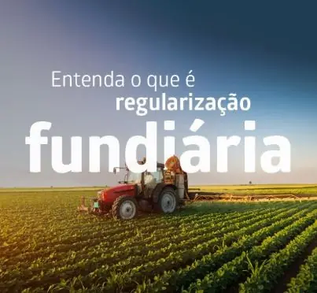
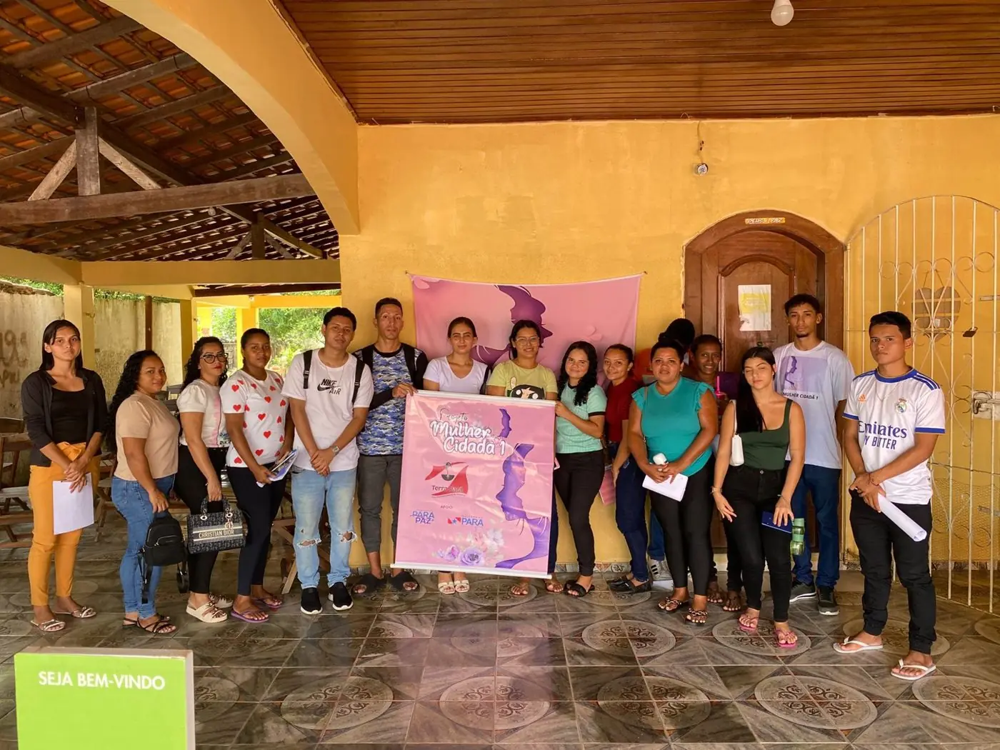
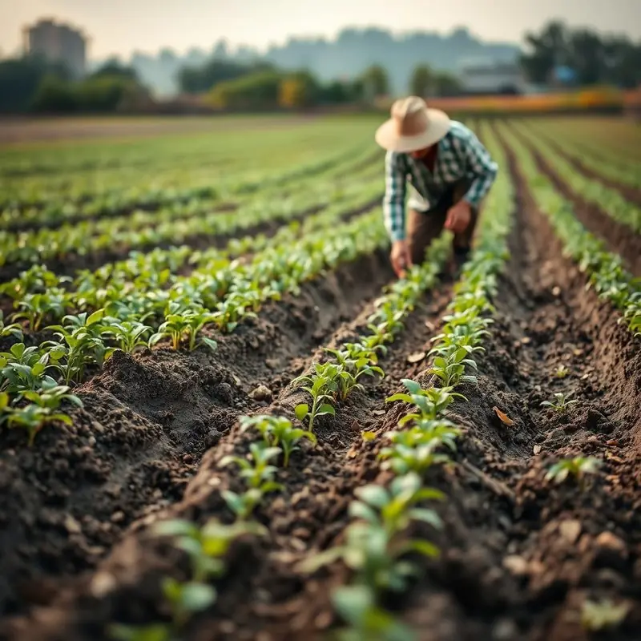

Ambiental
Cotijuba Mais Verde
Ações de recuperação ambiental e arborização para promover sustentabilidade e valorização do território.
Ver projetoConsultoria especializada em projetos que geram impacto real na Amazônia e no Brasil.

Titulação, legalização e regularização de imóveis rurais.
Saiba mais →Iniciativas que geram impacto real e transformam vidas, comunidades e territórios na Amazônia e além.
Ações de recuperação ambiental e arborização para promover sustentabilidade e valorização do território.
Ver projeto
Desenvolvido com foco no fortalecimento da cadeia produtiva do açaí.
Ver projeto
Futebol para veteranos que promove bem-estar físico e mental, integração social e camaradagem.
Ver projeto
Avaliação técnica inicial
Estratégia e metas
Documentação completa
Captação e liberação
Acompanhamento técnico
Relatórios e prestação de contas
Unimos conhecimento técnico, experiência em campo e atendimento próximo para tirar o seu projeto do papel com segurança.
Profissionais experientes em diversas áreas do desenvolvimento rural e ambiental.
Soluções sob medida para cada realidade, contexto e necessidade do cliente.
Mais de 100 projetos aprovados e executados com sucesso em toda a Amazônia Legal.
Agilidade no atendimento com resposta em até 24 horas úteis para qualquer demanda.
Mais de 15 anos de atuação no desenvolvimento rural e ambiental da Amazônia Legal.
Do diagnóstico à prestação de contas, entregamos o projeto 100% finalizado.


